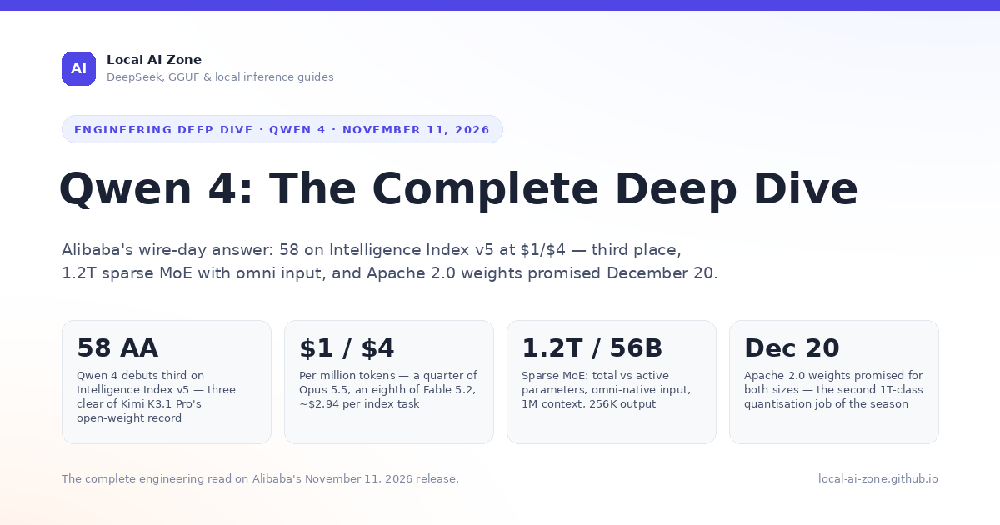
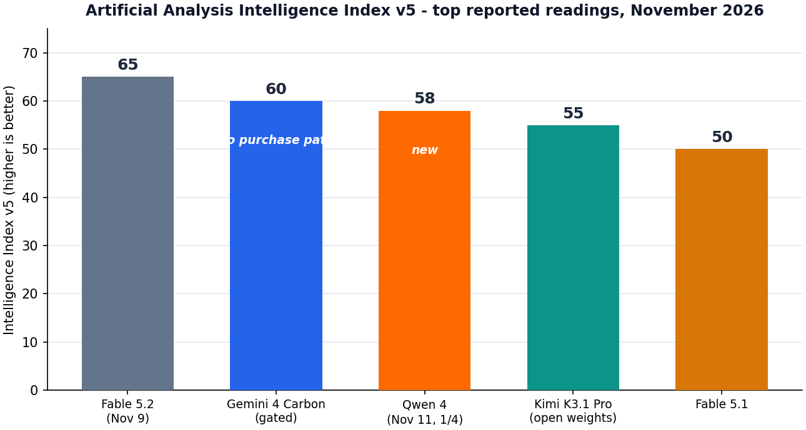
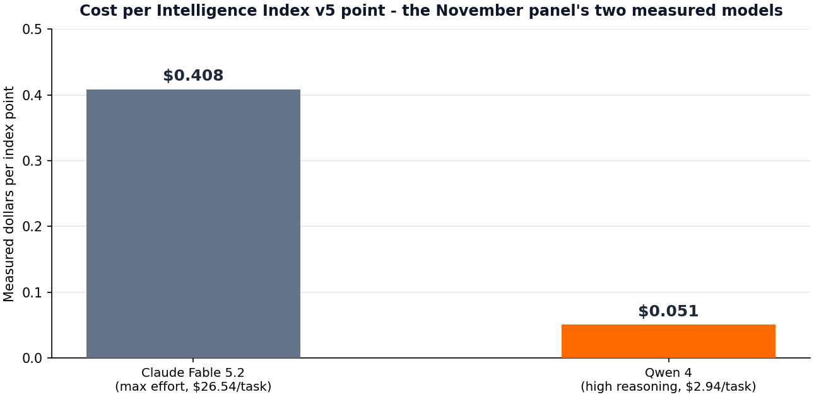

ENGINEERING DEEP DIVE
Qwen 4: The Complete Deep Dive
Alibaba's wire-day answer - benchmarks, the price-performance record, the omni-native contract, the December 20 weight promise, economics, and migration, read for engineers
Model IDs: qwen-4 / qwen-4-flash (Alibaba Cloud Model Studio, qwen.ai API, OpenAI-compatible endpoints)
Release date: November 11, 2026 (API tier); Apache 2.0 weights promised by December 20, 2026
Sources: Alibaba announcement, Model Studio documentation and rate card; Artificial Analysis; Reuters; The Decoder; TechCrunch; community cadence trackers; this site's GGUF index
Audience: engineers and technical decision-makers
Technical blog manuscript November 2026
Executive Summary: What Changed, in Ninety Seconds
On Wednesday, November 11, 2026 - the final day of the window this site's November dispatch covers - Alibaba released Qwen 4, the generation the industry had been expecting since the Apsara Conference keynote on September 22 put it "in training" and the community's cadence trackers pointed at the end of October. The trackers were wrong by eleven days, and the release lands at an interesting moment: three days after Claude Fable 5.2 took the Artificial Analysis leaderboard's top slot at 65, and a week after Kimi K3.1 Pro's 2.8T weights made "open-weight frontier" literal. Qwen 4 debuts at 58 on Intelligence Index v5 - third place, five points behind Google's gated Gemini 4 Carbon, seven behind Fable 5.2, and three clear of Kimi K3.1 Pro's open-weight record - at $1/$4 per million tokens, the cheapest price card any top-five model has ever shipped with. Artificial Analysis measured the model at roughly $2.94 per index task at high reasoning: five index points below Fable 5.2 for about one-ninth of the spend, the widest intelligence-per-dollar gap at the top of the table this site has tracked.
The headline moves are four. First, capability: 58 is a real frontier reading, and its distribution matters as much as its total. Qwen 4 posts 47.9% on Frontier Code 2.0 and 66.8% on Frontier SWE v2 - between Opus 5.5 and Fable 5.2 on both agentic-coding boards - and its 1,792 Elo on the AA-Briefcase knowledge-work benchmark edges out Fable 5.2's 1,785 at one-eighth the per-token price, though it remains short of Claude Sonnet 5.5's 1,813. Second, the contract: Qwen 4 is the anti-Fable in API design - sampling parameters (temperature, top_p, top_k) are fully supported, forced tool choice works, and hybrid thinking is switchable per request, including an explicit token budget, where Fable 5.2's adaptive thinking is always on and rejects all of those fields. Third, omni: the flagship ingests text, images, audio and video through one endpoint with no separate Omni SKU, and the launch demo - live 19-language interpretation at sub-400 ms voice latency - is the first credible workstation-class interpretation claim at this price. Fourth, the weight promise: Alibaba committed to full Apache 2.0 weights for both Qwen 4 (1.2T total, 56B active) and Qwen 4 Flash (30B total, 3.3B active) by December 20, 2026 - a published schedule in the Moonshot mold, and the second 1T-class quantisation job the local ecosystem has been handed in a month.
There is a clear "what did not ship" in the release itself, and it is the same story that defined October: the weights. What went live on November 11 is the API tier only - no download, no Hugging Face repository, no GGUF. Qwen3.8-Flash-Next remains the newest Qwen with published weights, which means the price-performance leader of the v5 table cannot be self-hosted until the December 20 promise lands, and the promise is a schedule, not a delivery. The October precedent cuts both ways: Moonshot hit its published weight date to the day, which is why this site treats dated commitments as meaningful; Alibaba's own record on the Qwen 4 window so far is one missed community expectation, which is why the promise deserves a calendar entry rather than a purchase order.
The short guidance for engineers: Qwen 4 is not a Fable competitor in workload shape - it is a price-performance re-anchoring of everything below the frontier specialist tier. If your routing table sends routine agentic coding to Opus 5.5 at $4/$20 and knowledge work to Sonnet 5.5 at $2/$10, Qwen 4's benchmark profile at $1/$4 - within two points of both on the coding boards, above Fable on knowledge-work Elo - makes it the new default candidate for both lanes, pending independent reproduction. The sections below cover the lineage, the architecture, the contract differences that will bite OpenAI-native and Claude-native clients in opposite directions, the benchmark fine print, the omni bet, the December 20 weight math for local deployment, the economics, and a migration checklist from Qwen3.8 Max and Flash-Next.

Context: The Road to 4
The Qwen 4 window opened at the Apsara Conference on September 22, 2026, when Alibaba confirmed the next generation was in training - and closed, per the community's cadence trackers and multiple press reports, somewhere around the end of October. Nothing shipped by October 29, nothing shipped through the first eight days of November, and this site's November dispatch went to press recording Qwen 4 as one of the month's two missed commitments alongside Mistral Large 4's overdue weight drop. The release then arrived on November 11, the window's final day, in the pattern the dispatch series has learned to expect from Alibaba: quiet, late relative to community expectations, and priced to move the market rather than the leaderboard alone.
What the release answered was a lineage that had been running hot all autumn. The Qwen3.8 family shipped in September in three tiers - Max (0902) on September 3 at $2/$6 with open weights, Omni Flash on September 21 as the multimodal omni tier, and Max Prime on September 23 at $4/$12 - and Flash-Next followed in October as an architecture preview of what the 4 generation would industrialize: Qwen Sparse Attention, sparse MoE routing refinements, and the Muon-derived optimizer work the team documented in unusual detail. Independent measurement treated the family seriously: Qwen3.8 Max posted a $1.81 average task cost on Artificial Analysis' older index with a reading that made it the price-performance reference for the fall, and the community quant layer followed every drop within days - DavidAU's Qwen3.8 27B Heretic build and the Concept 27B upload both appear on this site's November ledger. Qwen 4 is the generation that turns the Flash-Next preview into a flagship: the sparsity story scaled from the 30B class to 1.2T total parameters, and the omni tier collapsed from a separate SKU into the flagship's native input stack.
The competitive context is the part worth reading closely. Kimi K3.1 Pro's Apache 2.0 weights landed November 4 and reset the open-weight frontier at 55 on the v5 index - 2.8 trillion total parameters, 104 billion active, the largest downloadable model ever published. Qwen 4's API debut reads three points higher, but the two releases are not in the same market yet: Kimi's model is downloadable today, Qwen 4's is not downloadable until December 20 at the earliest. The Chinese frontier labs are now running the same race on opposite schedules - Moonshot shipped weights first and API prominence second; Alibaba has shipped API prominence first and weights on a promise. For buyers, the practical consequence is a two-week decision window (November 11 to December 20) in which the cheapest 55-plus intelligence is rented from Alibaba at $1/$4 or downloaded from Moonshot at the cost of running 2.8T parameters nobody has yet quantized. For the ecosystem, the December 20 date is the second 1T-class quantisation job in six weeks, arriving just as the K3.1 Pro conversion effort has taught the toolchain builders what a MoE at this scale actually requires.
The Family: Two Sizes, One Spine
Qwen 4 ships in two sizes on a shared architecture, and the sparse design is the reason the flagship's price card is possible at all. The flagship is a 1.2-trillion-parameter sparse MoE with 56 billion active parameters - a 4.7% activation ratio that carries the Flash-Next generation's routing refinements to a scale only Kimi's 2.8T/104B exceeds among announced models. Total capacity is what the model knows; active capacity is what each token costs, and the 56B figure is the reason a 58-reading model can be priced at $1/$4 rather than Fable-class rates: per-token compute is Opus-class, not frontier-flagship-class. The second size is Qwen 4 Flash, 30B total with 3.3B active, priced at $0.15/$0.60 - the routine-work tier, and the model most local deployments will actually run once weights land, given that 30B at 4-bit is roughly 17 GB.
Three architecture features carry over from the Flash-Next preview and matter for deployment math. First, Qwen Sparse Attention (QSA), the long-context design the team previewed in October: context length is 1 million tokens on both sizes, with output capped at 256K - a 2x increase over Fable 5.2's 128K output ceiling and the largest output window in the top five. Second, the sparse MoE routing uses fine-grained experts with a shared-attention backbone, which is what keeps a 4.7% activation ratio stable at 1.2T scale; the same design property that makes inference cheap makes the eventual GGUF conversion a serious engineering project, for the same reasons the K3.1 Pro conversion is proving hard - expert tables, sparse routing maps, and quantisation formats the mainstream toolchains were not built around. Third, the flagship is omni-native: text, image, audio and video enter through one endpoint and one tokenizer stack, with no separate Omni SKU and no vision surcharge. The September generation's Omni Flash tier exists precisely so this consolidation could be measured before it became the default; Qwen 4 is where it pays off.
The reasoning stack is the one genuinely new control surface, and it inverts the Claude contract. Qwen 4's hybrid thinking is switchable per request: send enable_thinking: true for agentic and math workloads with an optional thinking_budget in tokens, or false for latency-bound turns - and the model's own published tables show the thinking dial behaving the way the effort dial does on Claude, with extra thinking capturing most of max's quality at a fraction of the cost. The difference from Fable 5.2 is philosophical, not just technical: Anthropic ships one mode and a coarse effort parameter because it does not want clients steering reasoning; Alibaba ships the dial in every position because its buyer base - the OpenAI-compatible tooling ecosystem - expects to steer. Neither is wrong; the migration section below covers what each choice breaks.
The Contract: What Changes for Developers
Qwen 4's API contract is the OpenAI-compatible surface the Qwen ecosystem has always shipped, and against the November frontier it is deliberately boring - which is the feature. Sampling parameters are fully supported: temperature, top_p and top_k all work and all default to the same values the Qwen3.8 tier shipped. Tool choice is unconstrained: tool_choice accepts auto, any and tool, with strict JSON schemas supported per function - so the forced-tool patterns that 400 on Fable 5.2 run unchanged here. Streaming, partial-message deltas, and the function-calling shapes the OpenAI SDKs emit are all first-class. Teams migrating from GPT-class or Qwen3.8-class clients should expect the swap to be a base-URL and model-ID change; teams migrating from the Claude line should expect the opposite - the fields Fable forced you to delete are the fields Qwen expects you to send.
The thinking controls are the one place the contract is new. enable_thinking is a first-class request field on both sizes; thinking_budget (in tokens) bounds the reasoning phase and returns a 400 if it is set below the documented floor or above the context; and the response carries a separate reasoning_content field that the Qwen SDKs strip from downstream history by default. Unlike the Claude line's prefix-bound thinking blocks, Qwen 4's reasoning traces are not cryptographically bound to the conversation prefix: you may edit, reorder or delete earlier turns freely, at the documented cost that cross-turn reasoning continuity degrades rather than errors. That is a real capability difference in long agentic sessions - Fable 5.2's binding is also an optimization guarantee, and Qwen 4 trades it for flexibility. The interleaved variant matters for agents: interleaved_thinking lets the model re-enter reasoning between tool calls within one turn, which is the pattern the monorepo-port demo (below) was built on.
Commercial terms are thin and conventional. The rate card is $1/$4 per million tokens on the flagship and $0.15/$0.60 on Flash; cache reads are $0.10 per million (Qwen's cache pricing has always been aggressive, and 1M-token context sessions are where it compounds), cache writes $1.25 (5-minute) and $2 (1-hour), and the Batch API takes a flat 50% off input and output ($0.50/$2). The docs commit to no training on API inputs - the standing Qwen-tier promise - and a 30-day log retention window with a zero-retention toggle in the console, which puts it on the opposite side of the retention ledger from Fable 5.2's mandatory 30-day Covered-Model window: Qwen's ZDR is a toggle, not an authorization request. Rate limits at launch are 4M tokens per minute and 30K requests per minute on the flagship, with documented expectations of increase within the first month. The model is available through Alibaba Cloud Model Studio, the qwen.ai API, and OpenAI-compatible community endpoints; day-one Bedrock/Foundry-style hyperscaler listings are not part of the launch, and the docs note only that "distribution announcements" are pending - which, given the December 20 weight commitment, reads like a deliberate sequencing choice.
Table 1: Qwen 4 at a glance
| Property | Value |
|---|---|
| API model IDs | qwen-4 (flagship) / qwen-4-flash (Alibaba Cloud Model Studio, qwen.ai API; OpenAI-compatible endpoints) |
| Release / weights | API tier November 11, 2026; Apache 2.0 weights for both sizes promised by December 20, 2026 |
| Architecture | Sparse MoE: 1.2T total / 56B active (flagship), 30B total / 3.3B active (Flash); Qwen Sparse Attention; fine-grained experts with shared attention backbone |
| Context / output | 1M token context; 256K max output tokens (both sizes) |
| Modalities | Text, image, audio and video in (omni-native, both sizes); text out |
| Reasoning | Hybrid thinking, switchable per request (enable_thinking, thinking_budget, interleaved_thinking); reasoning returned in reasoning_content, not prefix-bound |
| Knowledge cutoff | October 2026 (reliable and training) |
| Pricing (per MTok) | $1 input / $4 output (flagship); $0.15 / $0.60 (Flash); cache writes $1.25 / $2; cache reads $0.10; Batch API 50% discount ($0.50/$2) |
| Speed | ~110 output tokens/second on the flagship at launch; Flash documented at roughly 3x flagship throughput |
| Contract notes | Sampling parameters supported (temperature/top_p/top_k); full tool_choice surface incl. forced use; history freely editable (no prefix binding); OpenAI-compatible error envelope |
| Data retention | 30-day logs by default; zero-retention toggle in console; no training on API inputs |
Benchmarks: The Numbers, Honestly Read
The official picture, with the fine print attached
Alibaba's published table follows the release grammar every frontier lab now uses: broad gains over the predecessor, a few rows where the model beats the most expensive competitor, and the interesting distribution hidden in the spread. On the agentic-coding evaluations, Frontier Code 2.0 reads 47.9% - above Claude Opus 5.5's 45.5%, below Claude Fable 5.2's 49.1% - and Frontier SWE v2 reads 66.8%, again between Opus 5.5 (62.3%) and Fable 5.2 (69.9%). Step up in difficulty and the gap to the frontier widens: Terminal-Bench Science 0.1 reads 63.2% against Fable 5.2's 74.6% and Opus 5.5's 58.7%, and HLE-Diamond - the expert-level academic set most models still fail - reads 71.5% against Fable's 80%. The row that will move budgets is AA-Briefcase: Qwen 4 posts 1,792 Elo on the knowledge-work benchmark, two points above Fable 5.2's 1,785 and nine short of Claude Sonnet 5.5's 1,813 - which means the cheapest model in the top five posts the second-best knowledge-work score of the November table, at one-eighth of Fable's per-token price.
Table 2: Headline benchmark results, November 2026
| Benchmark | Qwen 4 | Fable 5.2 | Opus 5.5 | Kimi K3.1 Pro | Notes |
|---|---|---|---|---|---|
| Intelligence Index v5 (Artificial Analysis) | 58 | 65 | n/a on v5 | 55 | Third place; not one-to-one comparable with v4.3.2 rows |
| Frontier Code 2.0 (agentic coding) | 47.9% | 49.1% | 45.5% | not published | Between Opus and Fable; extra thinking outscored max |
| Frontier SWE v2 (agentic coding) | 66.8% | 69.9% | 62.3% | not published | +4.5 points over Opus 5.5 |
| Terminal-Bench 4.0 | 64.1% | n/a | n/a | 65.7% (AA: 67%) | AA's independent run read 63.4% - a 0.7-point gap, disclosed |
| Terminal-Bench Science 0.1 (agentic science) | 63.2% | 74.6% | 58.7% | n/a | +4.5 over Opus, 11.4 short of Fable |
| HLE-Diamond (expert academic, no tools) | 71.5% | 80% | n/a | n/a | The frontier-gap row: hardest set, largest spread |
| AA-Briefcase (knowledge work, Elo) | 1,792 | 1,785 | n/a | n/a | Above Fable 5.2; Sonnet 5.5 still leads at 1,813 |
| xdev-bench-hard (cyber exploitation, controlled) | 78.6% | n/a | n/a | 81.0% (90.5% uncontrolled) | Disclosed control: 89.0% for the uncontrolled checkpoint |

The thinking dial is a benchmark variable, again
Every lesson the effort-dial era taught about reading these tables applies to Qwen 4's thinking dial. Alibaba's published rows were produced at the model's default thinking configuration, and the company's own disclosure notes that extra thinking outscored max thinking on Frontier Code 2.0 - the same inversion Fable 5.2 showed on the same benchmark class. The practical reading: benchmark deltas of a point or two between mid-tier configurations are inside the dial's range, and any buying decision that quotes a single row without quoting the dial setting is reading noise as signal. Artificial Analysis' 58 was measured under its own fixed protocol; Alibaba's 47.9% and 66.8% were measured under Alibaba's; the two agree on ordering, not on spacing, and this article keeps the two tables separate rather than blending them.
Where it wins, honestly
Three wins are real and load-bearing. Knowledge work at scale: the 1,792 AA-Briefcase reading at $1/$4 makes Qwen 4 the best intelligence-per-dollar option the knowledge-work tier has ever measured - Sonnet 5.5 still scores higher, but at double the input price and five times the output price. Long-output generation: the 256K output ceiling is double Fable 5.2's 128K, and the launch's monorepo-port demo is the existence proof for what a 256K budget buys - whole subsystems emitted in single turns without the fragmentation cost of stitching. And omni at the price: audio and video input at no surcharge undercuts every priced omni tier in the market, and the sub-400 ms interpretation demo (below) suggests the latency work is real rather than a slide. The honest framing for all three: these are measured-at-launch claims from the vendor's own tables plus one independent reading, and the v5 debut is the only figure so far that carries an independent measurement behind it. Treat the 58 as solid; treat the rest as provisional until Artificial Analysis' full Qwen 4 panel lands.
Where it loses, honestly
The losses are as structured as the wins. Against Fable 5.2 on the hard end - agentic science (63.2 vs 74.6), HLE-Diamond (71.5 vs 80), the long-horizon orchestration rows - Qwen 4 is not competitive, and nothing in the release claims it is; the 58 reading prices in the gap. Against Kimi K3.1 Pro the comparison is sharper than the three-point index spread suggests: Kimi's 55 comes with downloadable Apache 2.0 weights, a 1M context and disclosed cyber controls, while Qwen 4's 58 comes with an API key and a promise. On cyber exploitation, Kimi's controlled 81.0% edges Qwen's 78.6% - both models ship disclosed hygiene, and both read below the frontier proprietary tier. And against Claude Sonnet 5.5 on the knowledge-work Elo, Qwen 4 loses by nine points while costing less - which reads as a win in a price-performance frame but is a genuine loss if your workload sits at the top of the Elo distribution where those nine points live. The router conclusion this site has been drawing since October holds, with one new input: Qwen 4 moves the cheap-and-smart frontier, not the frontier.
The Omni Bet: One Backbone for Text, Vision, Voice
The September generation ran omni as a separate tier - Omni Flash shipped September 21 as the multimodal SKU - and Qwen 4 collapses it into the flagship's native input stack. Text, images, audio and video all enter through one endpoint and one tokenizer pipeline, with interleaved mixing allowed within a single request: a session can carry a screen recording, a spoken question about it, and a document, and the model reasons across all three without tool-mediated transcoding. The engineering consequence is latency: no separate omni service hop, no vision-surcharge rate card, and the docs publish a single latency table rather than per-modality pricing. Flash inherits the same input stack, which is the quiet strategic move - omni stops being a premium feature at $0.15/$0.60.
The launch demo is the first omni claim at this price that is specific enough to check: live simultaneous interpretation across 19 languages at sub-400 milliseconds end-to-end voice latency, demonstrated as a two-party conversation with the model translating in both directions while carrying the running transcript. Sub-400 ms matters because it is inside the turn-taking threshold of natural conversation - slower and the interpreter starts colliding with the speaker, which is exactly what every prior latency-tier omni demo did. The second demo is the one for engineers: a 17-hour agentic port of a 2.4-million-line Java monorepo to Go, run by 412 sub-agents under one Qwen 4 orchestrator, accepted by the port's test suite with zero human commits - the smaller sibling of Fable 5.2's eight-day OS build, and a credible demonstration of the 256K output budget doing real work: whole subsystems emitted per turn, with interleaved_thinking re-entering reasoning between tool calls. Both demos are vendor-produced and neither has an independent replication yet; the monorepo-port one at least publishes its harness, which makes it the one worth attempting first.
The Weight Promise: December 20 and the Local Ecosystem
The release's most consequential sentence for this site's audience is not on the benchmark slide: Alibaba committed to full Apache 2.0 weights for both Qwen 4 and Qwen 4 Flash by December 20, 2026 - a dated, permissive-licence commitment in exactly the mold Moonshot set on October 23 and honored on November 4. Apache 2.0, not the Community Licence: no usage restrictions, no revenue caps, no commercial-registration gate - the restriction history that made Qwen3 licensing a checklist item disappears from the 4 generation. The significance is easier to state than the delivery risk. If the promise lands, the local ecosystem gets, in one drop: a 58-reading model as raw BF16 (roughly 2.4 TB at 16-bit for 1.2T parameters), a 30B Flash at roughly 60 GB unquantized, and the second 1T-class quantisation project in six weeks.
The quantisation math deserves the honesty the K3.1 Pro section of this month's dispatch already modeled. A 1.2T sparse MoE is a harder conversion target than a dense model of equal size: expert tables are the bulk of the parameters, routing maps are activation-sensitive, and the mainstream GGUF toolchains were built for dense architectures - which is why the K3.1 Pro conversion, six weeks in, has produced no credible artifact. The differences here favor Qwen modestly: the fine-grained expert design with a shared-attention backbone means more, smaller experts (better quantisation granularity), the 4.7% activation ratio means CPU-offload inference is viable in a way 104B-active is not for most machines, and Flash at 30B/3.3B is a routine conversion the ecosystem will land within days of the drop. The realistic December-January picture: Flash GGUFs across every quant immediately; a flagship Q8 or Q4 artifact within weeks, at 1.2-2.4 TB resident; and the first practical local deployments running Flash plus API-tier flagship, which is precisely the advisor pattern the Fable economics section made famous - local Flash executes, rented Qwen 4 plans and reviews, and the December 20 drop turns the price-performance frontier into something a laptop can participate in.
Two caveats belong next to the promise. First, Alibaba's record on the Qwen 4 window is one missed community expectation already - the cadence trackers said end-of-October and got November 11 - so the December 20 date is a schedule to diarize, not a delivery to pre-spend against. Second, "weights by December 20" has not been qualified with size: the announcement's wording covers "both announced models," but whether the flagship ships day one at full 1.2T or in stages is unstated, and the Moonshot precedent (everything, day one, as promised) is the reference case, not the guarantee.
Cyber and the Disclosure Pattern
Qwen 4 ships with the disclosure pattern Kimi K3.1 Pro normalized in October: the company states, in the release materials, that offensive-exploitation data was removed from the mid-training corpus and the RL environment mix, and it publishes the measurement. The controlled checkpoint reads 78.6% on xdev-bench-hard against 89.0% for an uncontrolled checkpoint - a 10.4-point disclosed delta, directly comparable to Kimi's 9.5-point delta (81.0% vs 90.5%), and both companies are now making the same claim in the same grammar: frontier-adjacent cyber capability, deliberately narrowed, with the number in the open. What neither release provides is the methodology the Anthropic capability-caps disclosure also declined to publish - how the control is measured, what stops recovery during fine-tuning, and whether the delta survives community fine-tunes. Until that methodology exists, the disclosure pattern is best read as a good-faith signal with an unverifiable ceiling, and the practical defense is unchanged: the models are behind APIs and licences you can read, not behind promises you can audit.
The licence itself is the simpler half of the governance story: Apache 2.0 with no appendices, per the announcement. For organizations that spent the fall writing Qwen Community Licence compliance checklists - registration thresholds, revenue caps, attribution appendices - the 4 generation's licence section is a deletion, and that deletion is worth more to enterprise adoption than any single benchmark row.
Economics: The Intelligence-Per-Dollar Frontier Moves
The price card is the release's sharpest edge, and the arithmetic is simple enough to lead with: $1/$4 per million tokens is a quarter of Claude Opus 5.5's $4/$20, an eighth of Claude Fable 5.2's $8/$40, half of Qwen3.8 Max's $2/$6 on input and two-thirds on output, and it undercuts Kimi's API tier ($2/$10) on both lines while measuring three index points higher. Cache reads at $0.10 per million are the cheapest of any 1M-context model this site has tracked - one-half of Fable 5.2's $0.20 and the lowest cache-read rate in the November tables. The batch tier ($0.50/$2) makes asynchronous Qwen 4 cheaper per output token than any Haiku- or Flash-class model in the November tables, at a 58 reading.
Independent cost measurement is the reality check, and here the release is genuinely strong: Artificial Analysis measured Qwen 4 at roughly $2.94 per index task at high reasoning - five index points below Fable 5.2's 65 for about one-ninth of Fable's $26.54 max-effort task cost, and the cheapest per-point reading at the top of the v5 table by a factor the site has not previously recorded. The token-burn profile matters as much as the rate card: the sparse MoE burns meaningfully fewer output tokens per task than the dense frontier tier (the AA panel's early reading is in the low tens of thousands per task, against Fable 5.2's ~98,000), which means the per-task premium story that made Fable expensive does not apply here - the price advantage is structural, not a verbosity artifact. The thinking dial is the cost lever, as it is everywhere in the November tables: thinking-off turns are the cheapest and fastest, extra thinking captures most of max's quality, and the docs' own example budgets put a mixed-routing agent at roughly one-fifth of the same agent's cost on Fable-class routing.

Table 3: Pricing and positioning across the November market
| Model | Input / output (per MTok) | Index (v5) | Positioning |
|---|---|---|---|
| Claude Fable 5.2 | $8 / $40 (batch $4 / $20) | 65 | Frontier specialist: hardest problems, orchestration, formal science |
| Gemini 4 Carbon | no published price | 60 | Second place, no purchase path as of November 11 |
| Qwen 4 | $1 / $4 (batch $0.50 / $2) | 58 | Price-performance frontier: knowledge work, agentic coding, omni input |
| Kimi K3.1 Pro | $2 / $10 | 55 | Open-weight record: downloadable Apache 2.0 weights since Nov 4 |
| Qwen 4 Flash | $0.15 / $0.60 | not yet measured | Routine work and the first local deployment after December 20 |
| Claude Sonnet 5.5 | $2 / $10 | n/a on v5 | Knowledge-work Elo leader (1,813) in the Claude family |
| Claude Opus 5.5 | $4 / $20 | n/a on v5 | Anthropic's recommended daily driver for coding and knowledge work |
The router conclusion falls out of the table and it is the November dispatch's conclusion with a new denominator: Anthropic's two-tier structure (Opus for work, Fable for the hard 10%) now has a third rail. Qwen 4 at $1/$4 undercuts the Opus lane by 4x on input while scoring within two points on the agentic-coding boards and above it on knowledge-work Elo - pending independent reproduction of the vendor rows. The defensible November posture: benchmark your own workload across Opus 5.5, Qwen 4 and your incumbent before the December 20 weight drop reprices the local option too, and treat the Qwen rows as provisional until the independent panel lands.
Migration Guide: From Qwen3.8 Max and Flash-Next to 4
For Qwen3.8 clients the migration is genuinely small - a model-ID swap plus a rate-card update, with two audit points. First, the thinking fields: enable_thinking, thinking_budget and interleaved_thinking are new request parameters, and existing clients that send unknown parameters to strict proxies will need allowlist updates; the default (thinking on for the flagship) changes turn latency for clients that never reasoned before, so set the dial explicitly per workload rather than inheriting it. Second, the cache behavior: Qwen 4's cache keys are stricter about prefix stability than the 3.8 tier's, so the same prefix-editing patterns that broke Fable 5.1 caches will quietly erode Qwen 4's $0.10 cache-read economics without erroring - audit for mid-session system-prompt mutation the same way the Claude migration guide taught.
For clients arriving from the Claude line, the migration inverts: the fields Fable forced you to delete come back. Re-enable temperature/top_p/top_k where sampling mattered, restore tool_choice patterns (including forced use) that were rewritten for auto-with-strict-schemas, and remove the refusal-as-HTTP-200 handling - Qwen 4 refuses through the standard OpenAI-compatible error envelope, so legacy GPT-style error handlers work as written. The one capability regression to plan for: reasoning traces are visible in reasoning_content but not prefix-bound, so cross-turn reasoning continuity degrades on history edits instead of being guaranteed - the Claude migration guide's append-only discipline is now optional here, which is a flexibility win and a determinism loss in the same field. Retention posture improves for ZDR shops: the console toggle replaces Fable's express-authorization path.
On economics, recompute from scratch rather than scaling 3.8 spreadsheets: the rate card halves input and cuts output by a third versus Max, cache economics change an order of magnitude, and the sparse MoE's token burn differs enough per workload that per-task measurement - not per-token extrapolation - is the only honest comparison. The October lesson stands verbatim: take your five most expensive real prompts, run them at two thinking settings on Qwen 4 and your incumbent, and record dollars per completed task.
Practical Guidance: Where Qwen 4 Earns Its $1
The workload list where the benchmark profile justifies immediate adoption: knowledge work at volume (the 1,792 Elo at $1/$4 is the tier's new reference point), agentic coding in the Opus lane (47.9%/66.8% at a quarter of Opus's price, pending reproduction), long-output generation where the 256K ceiling removes stitching cost (document production, whole-subsystem refactors, batch pipelines), and omni ingestion at latency (interpretation, meeting intelligence, video QA) at rates no priced omni tier approaches. Batch-absorbable work is the quiet case: $0.50/$2 for a 58 reading makes overnight sweeps - research, test generation, corpus review - cheaper per point than any option measured this fall.
Where it does not (yet) earn a slot: the hard 10% that Fable 5.2 exists for - long-horizon formal science, 1,000-agent orchestration, hardware design - where the 11-16 point gaps on the science rows are real and priced into Fable's premium. Self-hosted deployments until December 20 delivers weights, at which point Flash becomes the local default candidate and the flagship becomes the largest local quantisation project of the winter. And latency-critical interactive UX at the cheapest tier remains Flash/Haiku-class work, not flagship work - 110 tokens/second is respectable, not fast. The one-sentence version: Qwen 4 is the new default below the frontier specialist tier, and the frontier specialist tier is still Fable 5.2's to lose.
Frequently Asked Questions
What is Qwen 4? Alibaba's flagship release of November 11, 2026: a 1.2-trillion-parameter sparse MoE with 56 billion active parameters, a 1M-token context, 256K output, omni-native input (text, image, audio, video through one endpoint), switchable hybrid thinking, and pricing of $1/$4 per million tokens. It debuted at 58 on Artificial Analysis' Intelligence Index v5 - third place, behind Claude Fable 5.2 (65) and Google's gated Gemini 4 Carbon (60), ahead of Kimi K3.1 Pro's 55 open-weight record. A smaller Qwen 4 Flash (30B total, 3.3B active, $0.15/$0.60) ships the same day.
How much does Qwen 4 cost? $1 per million input tokens and $4 per million output tokens through the API - a quarter of Claude Opus 5.5's $4/$20, an eighth of Fable 5.2's $8/$40, and under Kimi's $2/$10 on both lines despite the higher reading. Cache reads run $0.10 per million tokens, cache writes $1.25 (5-minute) and $2 (1-hour), and the Batch API takes a flat 50% off ($0.50/$2). Artificial Analysis measured roughly $2.94 per index task at high reasoning - about one-ninth of Fable 5.2's ~$26.54 at max effort, for five fewer index points.
Are the weights available? Not yet. What shipped November 11 is the API tier only. Alibaba committed to full Apache 2.0 weights for both sizes by December 20, 2026 - a dated commitment in the Moonshot mold, and one this site treats as a diarized schedule rather than a delivery, given that the community's end-of-October expectation for Qwen 4 itself slipped eleven days. Until the drop, Qwen3.8-Flash-Next remains the newest Qwen with published weights.
How does Qwen 4's thinking mode differ from Claude's? It inverts the design. Qwen 4's hybrid thinking is switchable per request - on, off, or bounded with an explicit thinking_budget - and temperature, top_p, top_k and forced tool choice are all fully supported. Fable 5.2's adaptive thinking is always on, cannot be disabled, rejects sampling parameters and forced tool choice with 400 errors, and prefix-binds its thinking blocks. The trade: Qwen gives you the OpenAI-compatible contract and the dial, Claude gives you a reasoning-continuity guarantee and refuses to let you steer.
Is Qwen 4 better than Kimi K3.1 Pro? Different products, currently. The index reading is higher (58 vs 55) and the price is lower ($1/$4 vs $2/$10), but Kimi's weights are downloadable today under Apache 2.0 and Qwen 4's are a December 20 promise; Kimi is also the larger model (2.8T/104B vs 1.2T/56B) with the higher controlled cyber score (81.0% vs 78.6% on xdev-bench-hard). If you need the intelligence rented, Qwen 4 is the better card; if you need the weights on disk - for fine-tuning, air-gapped deployment or cost control - Kimi is the only option of the two until the promise lands.
Should I switch from Opus 5.5 for everyday coding? Benchmark, then decide - that is the honest answer. Qwen 4 reads within two points of Opus 5.5 on both agentic-coding boards (47.9% vs 45.5% on Frontier Code 2.0, 66.8% vs 62.3% on Frontier SWE v2) at a quarter of the price, which makes it the new default candidate for the Opus lane; but the vendor rows are unreproduced, and Anthropic's routing guidance plus the Sonnet 5.5 knowledge-work record (1,813 Elo) mean the safe posture is a two-week A/B on your own workload before you re-route production. Nothing in Qwen 4's release addresses the Claude-specific contract behaviors (HTTP-200 refusals, thinking-block binding) that your handlers were rewritten for - they simply stop applying.
What is the omni input actually good for? Three measured cases from the launch: live interpretation (19 languages at sub-400 ms voice latency - inside natural turn-taking thresholds, which no prior latency-tier demo achieved), mixed-modality session reasoning (screen recording plus voice question plus document in one request, no transcoding hops), and video QA at scale. The strategic point is the price: omni input ships on Flash at $0.15/$0.60 too, which collapses the omni tier as a premium category the same way Qwen's September Omni Flash tier previewed it.
How big will the local GGUF be? The flagship's raw BF16 payload is roughly 2.4 TB for 1.2T parameters; expect the first credible quantized artifacts in the 0.3-1.2 TB range depending on expert precision, resident on the same class of hardware the K3.1 Pro conversion effort is targeting. The practical December deployment is Qwen 4 Flash - 30B total is roughly 17 GB at 4-bit, ordinary workstation territory - with the flagship rented at $1/$4 until the conversion tooling catches up. Flash GGUFs should appear within days of the December 20 drop; a flagship artifact is a weeks-scale project, as the K3.1 Pro experience has shown.
What about data retention and training on my data? The docs commit to no training on API inputs - the standing Qwen-tier promise - with 30-day log retention by default and a zero-retention toggle in the console. That is a materially different ZDR posture from Fable 5.2's, where zero retention requires express authorization from Anthropic; on Qwen 4 it is a switch you flip yourself.
Should I wait? If your workload is knowledge work, Opus-lane coding, long-output generation or omni ingestion, no - benchmark now, because the price-performance claim is checkable this week on your own prompts. If your workload is the hard frontier (formal science, massive orchestration), nothing here changes your architecture. If you are waiting for the local story, diarize December 20 and watch this site's index for the Flash conversions - that is the date the price-performance frontier becomes something you can run at home.
Final Verdict
Qwen 4 is the release that changes the denominator under everything below the frontier specialist tier. The capability story is real but honest about its shape: 58 is third place, the agentic-science and hard-reasoning rows still belong to Fable 5.2, and the gaps there are 11-16 points, not rounding errors. What the release actually does is reprice the middle of the market - knowledge-work Elo above Fable's at one-eighth the per-token cost, agentic coding within two points of Opus 5.5 at a quarter of its price, omni input collapsed from premium SKU to default feature, and an independently measured $2.94 per task that is the cheapest 55-plus intelligence anyone has ever put on this table. The contract is the anti-Fable: switchable thinking, full sampling surface, no prefix binding, a ZDR toggle instead of an authorization queue - the OpenAI-compatible buyer base's preferences built into an API. And the governance story follows the pattern October normalized: disclosed cyber hygiene with a published delta (78.6% vs 89.0%), Apache 2.0 without appendices, and a dated weight commitment - December 20 - that turns the whole price-performance story into a question the local ecosystem can check. The caveats are the ones this dispatch series keeps having to repeat: the vendor benchmark rows are unreproduced, the weight promise is a schedule with one slip already on Alibaba's record, and the 58 reading has exactly one independent measurement behind it. But the direction is unambiguous, and the December 20 drop is the date the two-lab open-weight race - Moonshot's weights-first, Alibaba's API-first - finally converges on the same download button. Until then: rent the 58 at $1/$4, benchmark it against your Opus lane this week, and let the frontier specialist tier keep paying Fable's rates for the turns that earn them.
Sources
- [Official] Alibaba - Qwen 4 announcement, Model Studio documentation and API rate card, qwen.ai and Alibaba Cloud, November 11, 2026 (model IDs qwen-4 / qwen-4-flash; 1.2T total / 56B active sparse MoE, 30B total / 3.3B active Flash; Qwen Sparse Attention; 1M context, 256K output; omni-native input; switchable hybrid thinking with
enable_thinking/thinking_budget/interleaved_thinking; $1/$4 and $0.15/$0.60 per million tokens, cache writes $1.25/$2, reads $0.10, Batch 50%; ~110 output tokens/second flagship; October 2026 knowledge cutoff; no training on API inputs, 30-day logs, console ZDR toggle; Apache 2.0 weights for both sizes promised by December 20, 2026) - [Official] Alibaba - Qwen 4 benchmark tables accompanying the November 11 release (Frontier Code 2.0 47.9%; Frontier SWE v2 66.8%; Terminal-Bench 4.0 64.1% with AA's independent 63.4% disclosed; Terminal-Bench Science 0.1 63.2%; HLE-Diamond 71.5%; AA-Briefcase 1,792 Elo; extra thinking outscored max on Frontier Code 2.0; xdev-bench-hard 78.6% controlled vs 89.0% uncontrolled with disclosed corpus and RL hygiene; the 17-hour, 412-agent, 2.4M-line Java-to-Go monorepo port with published harness; the 19-language sub-400 ms interpretation demo)
- [Official] Alibaba - Apsara Conference keynote, September 22, 2026 (Qwen 4 confirmed in training; no date given), and the Qwen3.8 tier record: Max (0902) September 3 at $2/$6 with open weights, Omni Flash September 21, Max Prime September 23 at $4/$12
- [Independent] Artificial Analysis - Intelligence Index v5 publication and Qwen 4 panel, November 11, 2026 (Qwen 4 at 58, third place; ~$2.94 average task cost at high reasoning; measured alongside Fable 5.2 at 65 / ~$26.54, Gemini 4 Carbon at 60 gated, Kimi K3.1 Pro at 55, Fable 5.1 at 50; Terminal-Bench 4.0 independent run at 63.4% vs the vendor's 64.1%)
- [Press] Reuters - Alibaba release report and the two-lab open-weight race framing, November 11, 2026; The Decoder - release summary from Alibaba data (AA-Briefcase 1,792 vs Sonnet 5.5's 1,813; the 256K output ceiling); TechCrunch - omni consolidation and the Omni Flash tier's September preview lineage
- [Official] Moonshot AI - Kimi K3.1 Pro weight release and Apache 2.0 licence text, November 4, 2026, used as the comparison point for the weight-schedule and disclosure patterns (2.8T total / 104B active; xdev-bench-hard 81.0% vs 90.5% uncontrolled; API $2/$10); Anthropic - Fable 5.2 announcement and system card, November 9, 2026, used as the pricing and contract comparison point ($8/$40; adaptive thinking always-on; Covered Model 30-day retention)
- [Independent] This site's GGUF index - November snapshot pulled November 10, 2026 (Qwen3.8-family community builds: DavidAU's Qwen3.8 27B Ultimate Heretic at 24,884 downloads, ConceptCountry's Qwen Concept 27B, ccore's Qwen3.5 4B GLB 3D Coder at 38,696 downloads - the quantisation-follows-API pattern Qwen 4's December drop will extend); community cadence trackers (end-of-October Qwen 4 window, missed by eleven days)
Independently researched from primary and independent sources. All benchmark figures and prices belong to their respective vendors and measurement organizations; where vendor tables and independent measurement disagree - the Terminal-Bench 4.0 gap is the known case - both readings are reported. Coverage window: September 22 - November 11, 2026; last verified November 11, 2026.
Related Posts
Qwen3.8-Flash-Next: A Deep-Dive into Alibaba's Qwen4 Architecture Preview
The October architecture preview that became Qwen 4: Qwen Sparse Attention, the sparse MoE routing refinements, and the Muon optimizer work.
Read more →Kimi K3.1 Pro: China's 2.8T MoE Model — Technical Deep Dive
The weights-first half of the two-lab race: Stable LatentMoE, Kimi Delta Attention, the 55 on the index, and the November 4 weight drop kept on schedule.
Read more →Claude Fable 5.2 & Mythos 5.2: The Complete Deep Dive
The frontier specialist tier Qwen 4 prices against: 65 on Intelligence Index v5, the capability caps, the 1,000-agent OS build, and the $8/$40 first cut.
Read more →Gemini 4 Carbon: The Complete Deep Dive
The measured-but-unreleased second slot: 60 on Intelligence Index v5, five above Qwen 4's debut reading, with no purchase path as of November 11.
Read more →November 2026 AI Model Updates
The month in full: Fable 5.2 at 65, Kimi's weight drop, Qwen 4's wire-day debut at 58, the deadline ledger, and the November GGUF wave.
Read more →October 2026 AI Model Updates
Eight specialist releases, Kimi K3.1 Pro at the open-weight record, and the shift from price per token to cost per completed task.
Read more →About the Author
Hussain Nazary is a software developer specializing in local AI deployment and the creator of GGUF Loader, an open-source tool for running GGUF models locally. This analysis is part of Local AI Zone's ongoing coverage of frontier and open-weight language models and practical deployment strategies.
Contact: GitHub | Consulting Services
Last Updated: November 11, 2026 | Version 1.0